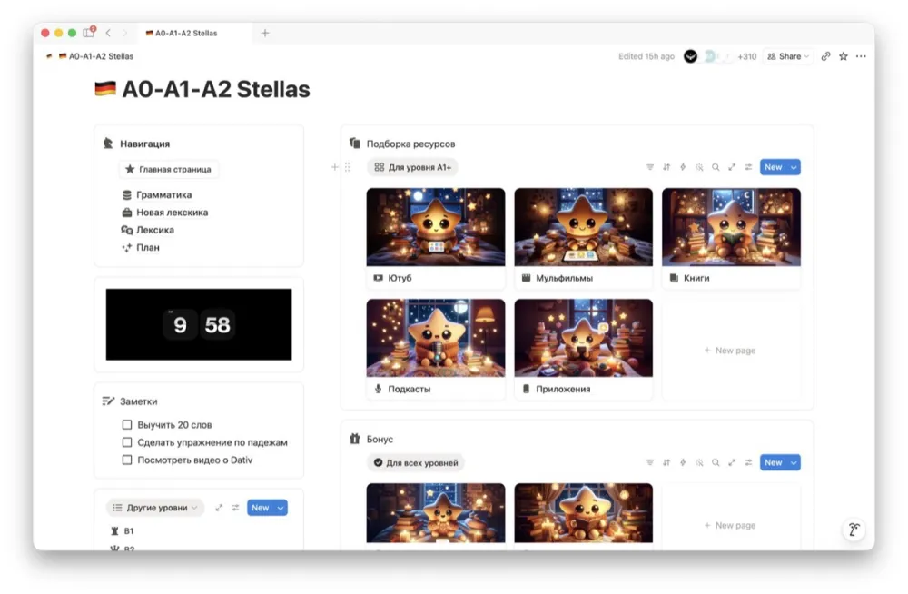
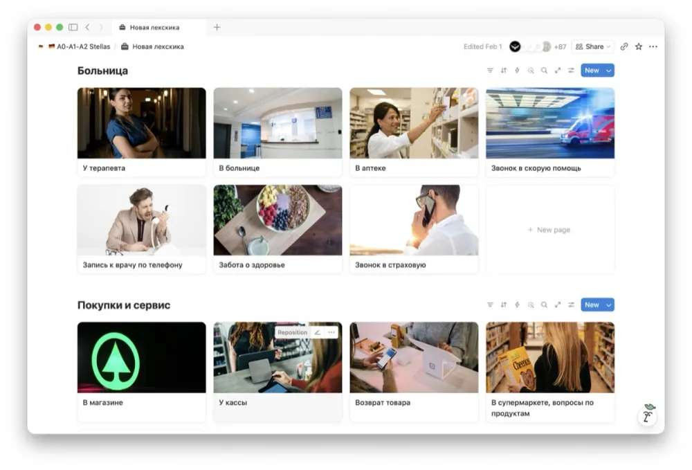
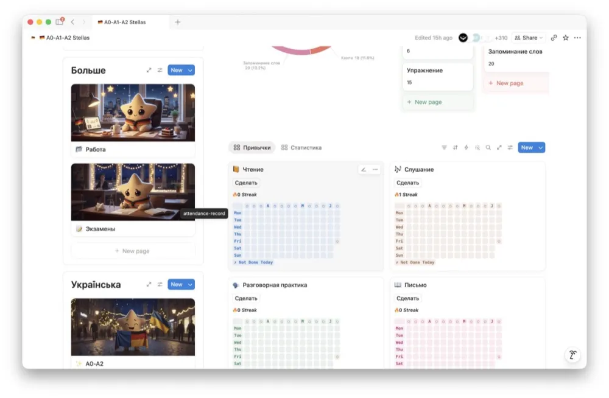
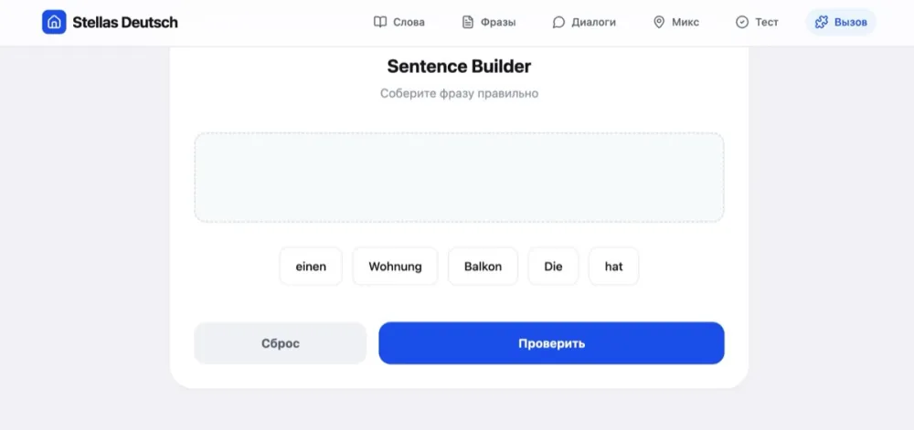
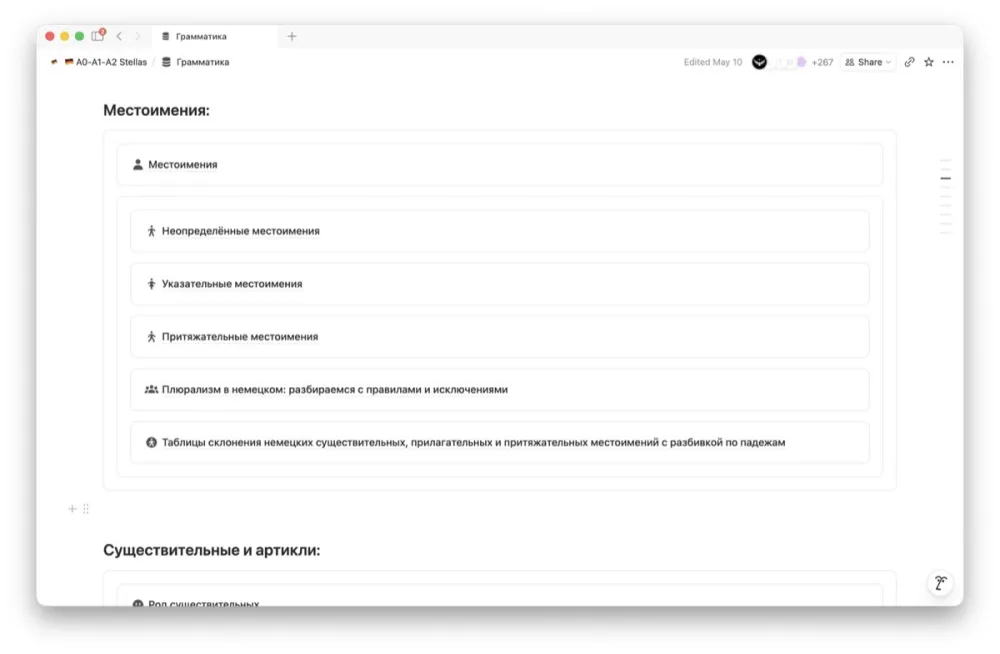
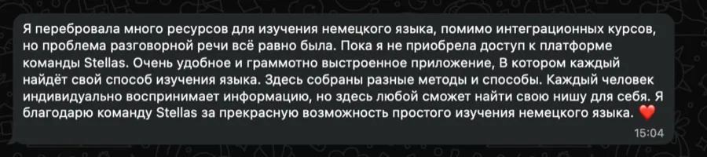
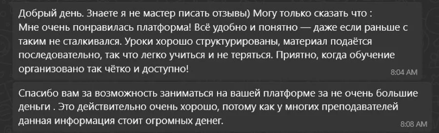

Мечтаем
Wäre doch schon Freitag!
Вот бы уже пятница.
!Doch и nur усиливают тоску. Глагол можно поставить первым, можно начать с wenn.
Konjunktiv II пугает названием. На деле это три слова и пара правил. Разберём за 10 минут, с картинками и без таблиц на полэкрана.
слова держат почти весь разговорный Konjunktiv: wäre, hätte, würde
режима: «ещё можно» и «поезд ушёл». Больше не бывает
жизненных ситуаций, где без него никак. Разберём все
Давайте честно.
Слово Konjunktiv звучит как диагноз.
Открываете учебник, а там Präteritum Konjunktiv, Plusquamperfekt Konjunktiv, Konditionalis I, Konditionalis II. Таблица. Сноска к таблице. Звёздочка к сноске.
А вы, вообще-то, просто хотели вежливо заказать кофе 🌚
Хорошая новость: половину этой красоты немцы в живой речи не используют. Вообще.
Konjunktiv II — это просто немецкое «бы». Всё, что нереально, желаемо, упущено или слишком вежливо, чтобы говорить в лоб.
Konjunktiv II — это не про время. Это про отношение. Вы как бы говорите: «это не по-настоящему».
Indikativ — это то, что есть на самом деле. Жмите Konjunktiv II и смотрите, что будет.
Präteritum, Plusquamperfekt, Konditionalis I и II. Каша из терминов, от которой опускаются руки ещё до первой фразы.
wäre и hätte для sein и haben. Модальные: könnte, müsste, sollte. Для всего остального würde + инфинитив. Всё.
Konjunktiv II делают из Präteritum. Сильным глаголам добавляют умлаут и -e на конце.
Слабым… ничего. Они и так совпадают с прошедшим, и в этом вся драма.
Выберите глагол и смотрите, как он превращается. По шагам.
Формы вроде führe, stünde или (держитесь) schwömme в разговоре звучат как бабушкина шкатулка. Красиво, пыльно, никто не открывает. Поэтому почти для всех глаголов берут würde + инфинитив и не парятся.
Жмите «Шаг» или просто смотрите.
Эти формы живые, их говорят каждый день. Всё остальное через würde. Список короткий, честно.
Окончания как у Präteritum. Выделили лаймом.
Привычных времён у Konjunktiv II нет. Зато есть два состояния.
Сейчас: ситуацию ещё можно поменять, хотя бы теоретически. Отменили дела, и время появилось.
Тогда: всё, проехали. Остаётся только вздыхать красиво, на немецком.
hätte + два инфинитива в самом конце. Выглядит странно. Звучит нормально. Запоминаем как есть.
Листайте вбок
Wäre doch schon Freitag!
Вот бы уже пятница.
!Doch и nur усиливают тоску. Глагол можно поставить первым, можно начать с wenn.
Wenn ich reich wäre, würde ich im Wald wohnen.
Была бы богатой — жила бы в лесу.
!Обе половинки нереальны, значит, обе в Konjunktiv.
Du hättest mich anrufen können!
Мог бы и позвонить!
!Упрёк уровня «мама». Работает безотказно.
Fast hätte ich den Bus verpasst.
Я чуть не опоздала на автобус.
!fast / beinahe + hätte / wäre + Partizip II. Чуть не, но пронесло.
Könnten Sie mir kurz helfen?
Не могли бы вы мне помочь?
!Смягчает любую просьбу. В Германии это не опция, это выживание.
An deiner Stelle würde ich kündigen.
На твоём месте я бы уволился.
!Ещё вариант: Du solltest mehr schlafen. Совет без занудства.
Er sagt, er hätte keine Zeit.
Он говорит, что у него (якобы) нет времени.
!В разговорной речи часто заменяет Konjunktiv I. И даёт лёгкий привкус «ну-ну».
Er tut so, als ob er alles wüsste.
Он делает вид, будто всё знает.
!als ob / als wenn + Konjunktiv II. Для всех всезнаек в вашей жизни.
Konjunktiv II — главный инструмент немецкой вежливости.
Двигайте ползунок и смотрите, как приказ превращается в светскую беседу. Слово одно и то же — вода. Меняется только отношение.
Приказ. В кафе за такое могут и не принести.
Любая половинка слева подходит к любой справа. Потому что обе нереальны, и обе в Konjunktiv.
Следите за глаголами: в первой части он уезжает в конец, во второй würde стоит сразу после запятой.
Некоторые комбинации получаются дурацкие. Это нормально. Дурацкое запоминается лучше))
Подчёркнуты глаголы в Konjunktiv II
Соберите фразу из кусочков. Как на нашей платформе, только тут бесплатно))
Ошиблись — ничего страшного. Подскажем, где споткнулись.
Ошибаться можно. У каждого ответа разбор: почему так, а не иначе.
Закроете вкладку, а через неделю в кафе снова «Ich will».
Wäre doch … ! / Wenn … doch hätte!
Wäre doch schon Sommer!
Wenn … hätte, würde … + Inf.
Wenn ich Zeit hätte, würde ich kommen.
Wenn … Part. II hätte, wäre … Part. II
Wenn ich Zeit gehabt hätte, wäre ich gekommen.
Könnten / Würden / Hätten Sie …?
Hätten Sie kurz Zeit?
An deiner Stelle würde ich … / Du solltest …
Du solltest das probieren.
Fast / Beinahe hätte / wäre … Part. II
Beinahe wäre ich hingefallen.
Вот и всё.
Серьёзно, это весь Konjunktiv II для жизни. Остальное — для филологов и любителей бабушкиных шкатулок))
Шучу. Буду.
Вы дочитали до сюда. Значит, вам заходит, как мы объясняем. Konjunktiv больше не пугает. Ну или пугает, но уже меньше))
А теперь вопрос: сколько ещё таких тем вы учите по кусочкам из пяти разных мест?
Правило из ютуба, упражнение из телеги, слова в приложении с совой. Каждый кусочек норм, а вместе — каша. И вечный вопрос: а что учить дальше?
340+ гайдов от A0 до C1 в одном месте и по порядку. Закрыли один, открыли следующий. Думать, что учить, больше не надо.
Прочитали про Konjunktiv, кивнули, закрыли вкладку. Через неделю в кафе снова «Ich will Kaffee». Знакомо? Знакомо.
К каждому гайду упражнения, и не просто ответы, а разбор, почему именно так. В интерактивных версиях ещё проверка от ИИ и чат, где можно поболтать на немецком.
Выучили 30 слов в понедельник. В пятницу помните три. И то если повезёт.
7500+ слов с озвучкой и транскрипцией. Учите на слух, а не глазами. Флеш-карты и трекер показывают, что реально осело.
Работа, дети, Termin в Bürgeramt. Какие курсы по вторникам в 18:00, вы о чём вообще.
Всё в Notion, работает офлайн с телефона. 10 минут в U-Bahn — уже урок. Этого правда хватает, если каждый день.
Goethe через три месяца, а у вас стопка PDF-ок непонятного происхождения и нервный тик.
Раздел «Экзамены»: Goethe, telc, DTZ, ÖSD, TestDaF. На уровнях B1–C1 интерактивные темы ровно те, что попадаются на экзаменах: словарь, текст, диалоги, тест и чат с ИИ.
гайдов от A0 до C1: грамматика, лексика, реальные фразы
слов с озвучкой и транскрипцией
экзаменов в одном разделе
учеников прошли наши разговорные клубы





Структура та же, что вы только что прошли. Только тем 340 с лишним.





Это примерно два бранча в Берлине. Только бранч заканчивается через час, а доступ — никогда. Обновления для тех, кто уже купил, бесплатно. А обновляем мы постоянно, уж поверьте))
Konjunktiv вы уже разобрали. Осталось ещё 339 тем. Мы их тоже разложили по полочкам.
@stellasdeutsch